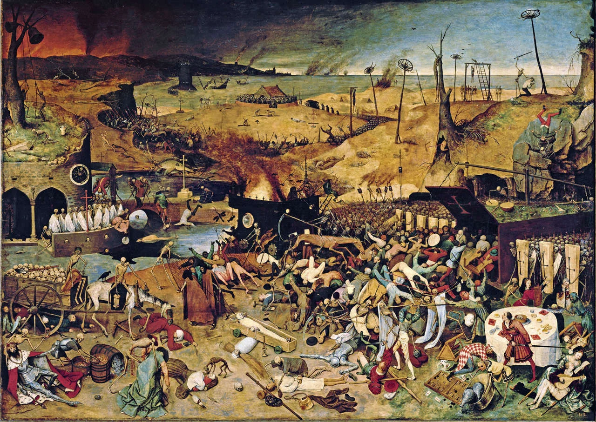
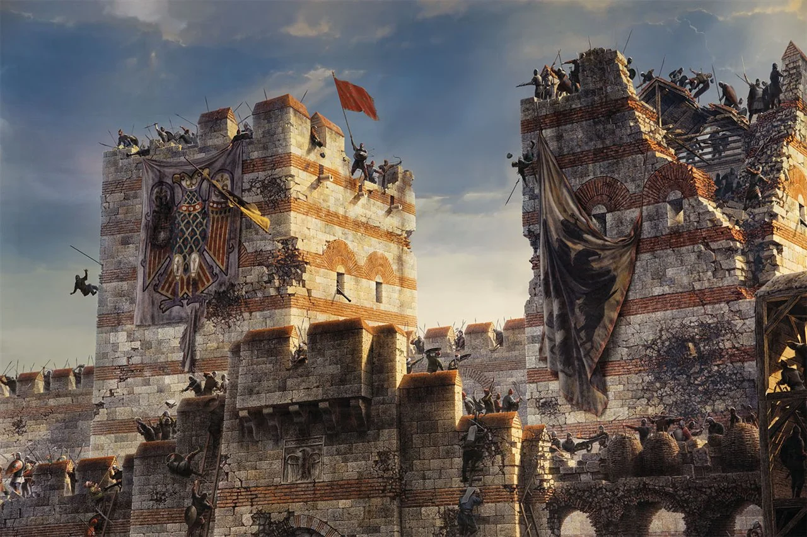

Fin del período
- Leé esta página entera.
- Respondé en voz alta las preguntas del final y anotá lo que te costó en ✎ Mis notas.
Objetivo: entender cómo y por qué termina la música medieval y qué cambios abren paso al Renacimiento.
Un final gradual, marcado por crisis y renovación
A diferencia del final de la Fase 1 (marcado por la caída política de un imperio), el final de la Edad Media musical está marcado por una combinación de crisis profundas y una renovación cultural que se va gestando desde adentro. No hay un solo evento que cierre la puerta: hay un proceso que se extiende, a los fines de este curso, entre mediados del siglo XIV y mediados del XV.
La peste negra como punto de quiebre (1347-1351)

Ya vimos en la lección 2.5 el impacto devastador de la peste negra sobre la vida musical institucional (monasterios diezmados, interrupción de tradiciones de canto). Pero su impacto va más allá de lo inmediato: la mortalidad masiva, que mató entre un tercio y la mitad de la población europea, generó una crisis profunda en la forma en que la sociedad medieval entendía su propio orden religioso y social. Si Dios permitió semejante catástrofe, ¿qué decía eso sobre el orden del mundo que la Iglesia predicaba? Esta pregunta, incómoda y nunca resuelta del todo, abre una grieta en la autoridad cultural absoluta de la Iglesia que se va a ensanchar durante los siguientes dos siglos, y que va a ser una de las condiciones de posibilidad del humanismo renacentista (lección 3.1): una corriente de pensamiento que, sin necesariamente rechazar la fe religiosa, empieza a poner al ser humano y a sus capacidades (razón, arte, ciencia) en el centro de la reflexión, en vez de ponerlo todo exclusivamente en manos de la autoridad divina interpretada por la Iglesia.
El Cisma de Occidente (1378-1417)
Apenas unas décadas después de la peste, la Iglesia católica entra en una crisis institucional sin precedentes: durante casi 40 años hubo, al mismo tiempo, dos (y por un período, hasta tres) papas distintos, cada uno con su corte, reclamando legitimidad simultáneamente (uno en Roma, otro en Aviñón, Francia). Este episodio, llamado el Cisma de Occidente, debilitó enormemente la autoridad moral unificada de la Iglesia justo en el momento en que esa autoridad llevaba casi mil años siendo el centro organizador indiscutido de la vida musical europea (lección 2.1). Aunque el cisma se resolvió formalmente en 1417, el golpe a la autoridad eclesiástica ya estaba dado, y va a ser uno de los factores de fondo que, un siglo más tarde, van a desembocar en la Reforma protestante (lección 3.4).
El auge de las cortes seculares como nuevos centros de mecenazgo musical
Durante el siglo XV, en paralelo al debilitamiento relativo de la autoridad eclesiástica, empiezan a consolidarse cortes nobles seculares (sobre todo en Borgoña, en lo que hoy es parte de Francia y Bélgica, bajo los duques de Borgoña) como centros de mecenazgo musical comparables o incluso superiores a los de la Iglesia. Compositores como Guillaume Dufay (a quien vas a conocer en la próxima fase) van a trabajar simultáneamente para la Iglesia y para estas cortes nobles, en un equilibrio nuevo entre el poder religioso y el poder secular que va a ser característico del Renacimiento. Esto marca un cambio estructural respecto de la Fase 2, donde la Iglesia era, con diferencia, la institución musical dominante.
La caída de Constantinopla (1453) y la llegada de la imprenta (1450s)

Dos eventos casi simultáneos, a mediados del siglo XV, suelen usarse convencionalmente para marcar el final simbólico de la Edad Media en la historiografía general (no solo musical): la caída de Constantinopla en manos del Imperio Otomano en 1453 (el fin definitivo del Imperio Romano de Oriente, que había sobrevivido casi mil años después de la caída de Roma en Occidente), y la invención de la imprenta de tipos móviles por Johannes Gutenberg hacia 1450, que va a transformar radicalmente, unas décadas más tarde, la forma de difundir música escrita (lección 3.4, con la imprenta musical de Ottaviano Petrucci en 1501).
Lo que se pierde y lo que sigue
- Se pierde (o se reduce): el monopolio casi absoluto de la Iglesia sobre la música escrita y conservada; la autoridad moral unificada de un único papa reconocido por toda Europa.
- Sigue (transformado): la polifonía, que de técnica experimental en Notre Dame se va a convertir en el lenguaje dominante y refinado del Renacimiento; la notación musical precisa, que va a seguir desarrollándose hasta volverse prácticamente la que usamos hoy; y la figura del compositor individual con identidad propia, inaugurada por Machaut, que se va a volver la norma (no la excepción) a partir del Renacimiento.
Preguntas de repaso
- ¿Por qué se dice que el final de la Edad Media musical es "gradual" y no un corte único como el de la Fase 1?
- ¿De qué forma la peste negra abre una grieta en la autoridad cultural de la Iglesia, más allá de su impacto inmediato sobre monasterios y cantores?
- ¿Qué fue el Cisma de Occidente y por qué debilitó a la Iglesia en un momento crítico para la historia de la música?
- ¿Qué cambio estructural representa el auge de las cortes de Borgoña como centros de mecenazgo musical?
- ¿Qué dos eventos de mediados del siglo XV se usan convencionalmente para marcar el final simbólico de la Edad Media?
Respuestas
- Porque no hay un único evento político (como la deposición del último emperador romano en la Fase 1) que marque un corte claro, sino una combinación de crisis (la peste negra, el Cisma de Occidente) y procesos de renovación cultural (el auge de las cortes seculares, el humanismo incipiente) que se extienden durante más de un siglo, entre mediados del XIV y mediados del XV.
- Porque la mortalidad masiva de la peste generó una crisis en la forma en que la sociedad entendía el orden religioso y social: la pregunta de por qué Dios permitió semejante catástrofe abrió una grieta en la autoridad cultural absoluta de la Iglesia, una grieta que se fue ensanchando durante los siguientes dos siglos y que es una de las condiciones de posibilidad del humanismo renacentista.
- Fue un período de casi 40 años (1378-1417) en el que hubo, al mismo tiempo, dos y por momentos tres papas distintos reclamando legitimidad simultáneamente. Debilitó a la Iglesia porque fracturó su autoridad moral unificada justo en el momento en que esa autoridad llevaba casi mil años siendo el centro organizador indiscutido de la vida musical europea.
- Representa el paso de un modelo donde la Iglesia era, con diferencia, la institución musical dominante, a un modelo donde cortes nobles seculares se vuelven centros de mecenazgo musical comparables o superiores a los de la Iglesia, con compositores trabajando simultáneamente para ambos poderes, algo característico del Renacimiento que viene después.
- La caída de Constantinopla en manos del Imperio Otomano en 1453 (fin definitivo del Imperio Romano de Oriente) y la invención de la imprenta de tipos móviles por Johannes Gutenberg hacia 1450, que unas décadas más tarde va a transformar radicalmente la difusión de la música escrita.